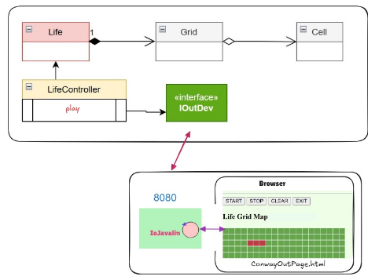

Introduction
Realizzare l'evoluzione del sistema verso un'architettura basata su servizi, per dotare il gioco GAME OF LIFE DI CONWAY di una GUI HTML come dispositivo di I/O, trasformando il sistema in un componente distribuito capace di interagire con il mondo esterno tramite protocolli di rete (WebSockets e HTTP).Requirements
- Realizzare una versione in Java del gioco Life di Conway, come gioco zero-player. Il gioco consiste nell’introdurre una Griglia di Celle il cui stato (cella ‘viva’ o cella ‘morta’) evolve come stabilito dallle regole di ConwayLife.
- Il committente fissa i seguenti requisiti:
- dotare il gioco di una pagina HTML come dispositivo di I/O
- la pagina deve costituire un componente esterno alla applicazione secondo la architettura riportata in IoJavalin esterno alla applicazione
- il gestore del gioco sarà l’utente che ha aperto per primo (owner) una pagina HTML collegata al gioco. In altre parole, solo la pagina dell’owner avrà pulsanti di comando START/STOP/CLEAN/EXIT attivi
- la pagina HTML deve essere aggiornata in modo automatico man mano il gioco procede
- un utente non owner che si collega mentre il gioco è in corso, dovrebbe vedere lo stato attuale della griglia in modo corretto
- opzionalmente: la pagina HTML deve indicare se il gioco continua anche nel caso di griglia vuota o di configurazione tabile
- il deployment del gioco deve avvenire mediante Docker
Requirement analysis
Il sistema deve comportarsi come un Server HTTP (per fornire la pagina) e come un Server WebSocket (per lo scambio dati bidirezionale in tempo reale).
Ogni cambiamento del modello Java deve essere pushato a tutti i client connessi senza richiesta esplicita (tecnologia WebSocket).
- Versione Integrata: Javalin e LifeController nello stesso processo (comunicazione diretta).
- Versione Esterna: Javalin isolato che comunica via rete con la logica (architettura a microservizi).
Ogni cambiamento del modello Java deve essere pushato a tutti i client connessi senza richiesta esplicita (tecnologia WebSocket).
Problem analysis
Analizzo l'architettura del sistema che voglio realizzare, basandomi sui due modelli discussi:
Distribuendo la GUI via Web si pone il problema della gestione di più utenti. In base ai requisiti, solo il primo utente connesso (owner) può interagire con la griglia. Il server memorizza la prima connessione e permette solo a quella di inviare comandi al LifeController. Tutti gli altri utenti sono spettatori passivi: se provano a interagire, il sistema ignora il comando o restituisce un messaggio di errore ("Non sei l'owner!").
- Architettura Integrata:

A livello strutturale, OutInWs.java deve implementare l'interfaccia IOutDev e incapsulare il server IoJavalin per comunicare con la pagina HTML via browser. La funzione di questa classe è di fare da mediatore tra il LifeController e il browser. Sarà necessario un metodo setController per iniettare dentro a OutInWs un riferimento al LifeController.
Di seguito il main: MainConwayGui.java. - Architettura Esterna:

In questa variante, il server IoJavalin.java è un componente esterno autonomo. A livello strutturale, l'applicazione comunica con il server tramite l'adattatore OutInGuiInteraction.java (che implementa IOutDev). La separazione fisica richiede una gestione dei messaggi via rete tra la logica Java e il server che eroga la GUI.
Distribuendo la GUI via Web si pone il problema della gestione di più utenti. In base ai requisiti, solo il primo utente connesso (owner) può interagire con la griglia. Il server memorizza la prima connessione e permette solo a quella di inviare comandi al LifeController. Tutti gli altri utenti sono spettatori passivi: se provano a interagire, il sistema ignora il comando o restituisce un messaggio di errore ("Non sei l'owner!").
Test plans
Project
Il sistema realizzato è suddiviso in due configurazioni principali per una maggiore flessibilità architettonica.
- Struttura della soluzione integrata:
In questa versione, il server e la logica risiedono nello stesso nodo.- Il file OutInWs.java implementa IOutDev e gestisce il ciclo di vita di Javalin.
- Il MainConwayGui.java inizializza il sistema e inietta il LifeController nel server tramite setController.
- La cartella src/main/resources/page contiene l'interfaccia HTML e il file wscontrol.js per la gestione granulare delle celle.
- Struttura della soluzione esterna:
Questa versione realizza il requisito di componente esterno all'applicazione.- Il file IoJavalin.java agisce come processo autonomo che espone la pagina Web.
- Il file OutInGuiInteraction.java permette alla logica Java di inviare messaggi IApplMessage verso il server remoto.
- Utilizza LifeIInOutCanvas.html e wscanvascontrol.js per una rappresentazione grafica basata su coordinate.
Testing
Deployment
La procedura seguita è basata su Docker e prevede:
- Generazione dell'archivio distribuibile tramite il comando gradlew distTar.
- Creazione dell'immagine Docker personalizzata: docker build -t gui26html:1.0 ..
- Esecuzione del container con mappatura della porta 8080: docker run -p 8080:8080 gui26html:1.0.
 GIT repo: https://github.com/desypellegrini/IngegneriaSistemiSoftware2026.git
GIT repo: https://github.com/desypellegrini/IngegneriaSistemiSoftware2026.git